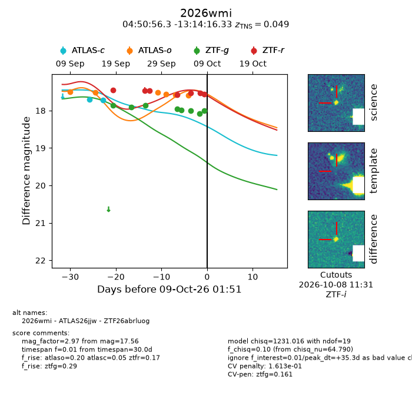
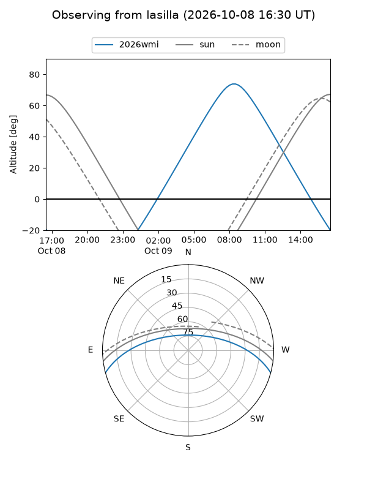
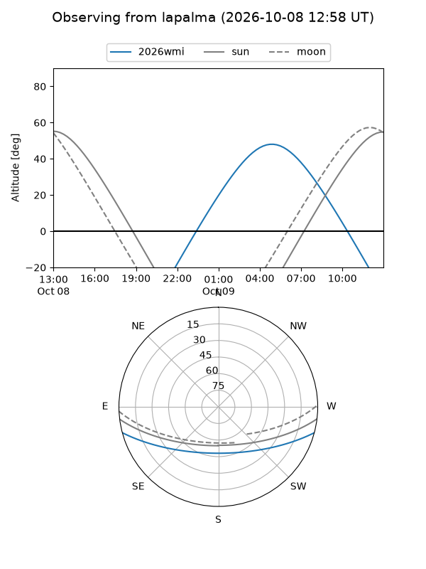
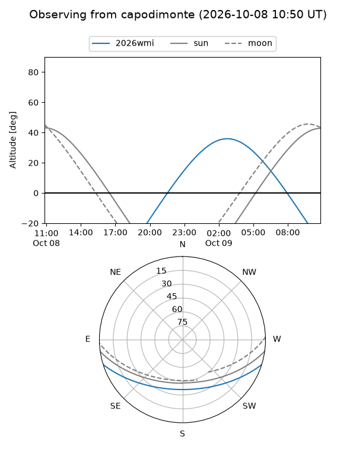
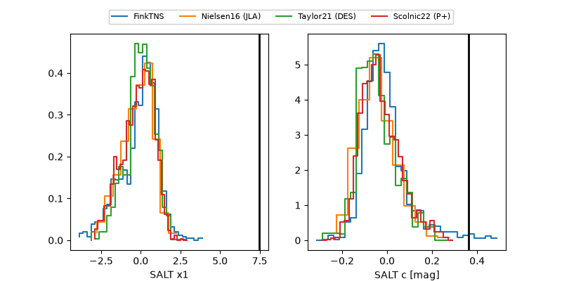

2026wmi
Target 2026wmi at 2026-10-09 01:53
Aliases and brokers:
FINK-ZTF: ztf.fink-portal.org/ZTF26abrluog
Lasair-ZTF: lasair-ztf.lsst.ac.uk/objects/ZTF26abrluog
ALeRCE-ZTF: alerce.online/object/ZTF26abrluog
YSE-PZ: ziggy.ucolick.org/yse/transient_detail/2026wmi
TNS name: wis-tns.org/object/2026wmi
Direct TNS query: direct search
alt names
ZTF26abrluog (ztf,fink_ztf)
2026wmi (tns,yse)
ATLAS26jjw (atlas)
Coordinates:
equatorial (ra, dec) = 72.7348,-13.23787
equatorial (HMS+DMS) = 04:50:56.35,-13:14:16.33
galactic (l, b) = (211.6414,-32.63049)
Flags:
TNS type: SN IIn
TNS redshift: 0.0490
peak dt: +35.3
likely cv: !!
Photometry:
last atlasc=17.72, atlaso=17.60, ztfg=18.01, ztfr=17.56
2 atlasc, 6 atlaso, 8 ztfg, 7 ztfr detections
Lightcurve

Visibility



Additional plots
